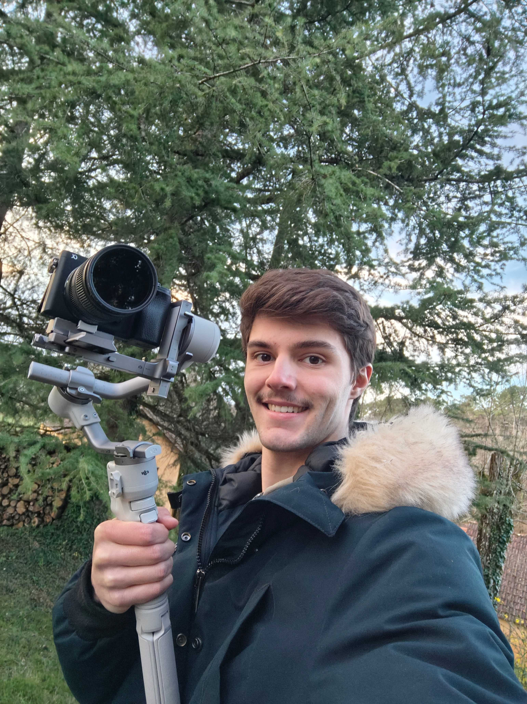

Vidéaste

Après 2 ans dans une classe préparatoire intégrée Math-Info, j'ai choisi de me réorienter vers ce qui me fait réellement vibrer : l'audiovisuel. Aujourd'hui étudiant en MMI à l'IUT de Chambéry et en alternance, je travaille sur la réalisation et la post-production avec une approche mêlant rigueur technique et recherche esthétique.
De l'idée au storyboard, je prends en charge la direction artistique et technique de vos projets vidéo.
Montage dynamique, étalonnage colorimétrique, et mixage audio pour des rendus professionnels.
Maîtrise des caméras et de l'éclairage pour des images de qualité cinématographique.